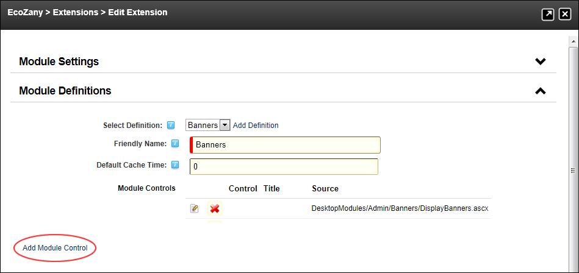

Adding a Module Control
How to add a module control.
- Navigate to Host >
 Extensions.
Extensions.
- Select the Installed Extensions tab.
- Expand the Modules section.
- Click the Edit
 button beside the required module.
button beside the required module.
- Expand the Module Definitions section.
- Click the Add Module Control link to open the Edit Module Control page.

- In the Key text box, enter a unique name to identify this control within the module. For example, you would choose Edit for an edit control. Note: You can pass this field in the query string of a URL to display this interface (E.g. www.domain.com/Default.aspx?tabid=1&mid=200&ctl=Edit).
- In the Title text box, enter the name of the module as it should appear in the controls list and when the interface is displayed. E.g. Settings
- At Source, select the source (.ascx) file from the drop down list, or enter the type name for this control in the text box. This is the link to the physical file which defines the module interface.
E.g. DesktopModules/Admin/Banners/BannerOptions.ascx
- At Type, select from the following interface types:
- Skin Object: Select to display a skin defined in the .ascx format.
- Anonymous: Select for a module control is visible to unauthenticated users.
- View: Select if the module control is viewable to users who can view module content.
- Edit: Select if the module control enables users to edit module content.
- Admin: Select if the module control is viewable by Administrators.
- Host: Select if the module controls is viewable by SuperUsers.
- In the View Order text box, enter a view order override if desired.
- Optional. At Icon, select an icon from the drop down list. This icon is displayed in the Module Header if supported by the skin.
- Optional. In the Help URL text box, enter a URL to a web page with information on how to use the module/interface.
- At Supports Popups?, select from these options:
- Mark
 the check box if the module control supports modal popup's (e.g. popup editing pages)
the check box if the module control supports modal popup's (e.g. popup editing pages) - Unmark
 the check box if popup's aren't supported. This is the default setting.
the check box if popup's aren't supported. This is the default setting.
- At Supports Partial Rendering?, select from these options:
- Mark the check box if the module control supports AJAX partial rendering. This is the default setting.
- Unmark the check box if partial rendering is not supported.

-